Curso de Google Documentos › Insertar › Lección 17
Lección 17 de 53 · menú Insertar
Cómo insertar imágenes en Google Docs: 7 formas
Fecha del video: · Programado
¿Querés sumar una imagen a tu Google Doc? En Insertar → Imagen tenés siete formas: Generar una imagen, Subir del ordenador, Buscar en la Web, Drive, Fotos, Cámara y Por URL. Acá las vemos una por una.
En el ejemplo usamos el documento «Lista de compras». No insertamos ninguna imagen: abrimos cada opción, miramos y cerramos, así el documento quedó como estaba.
Paso 1: abrí Insertar → Imagen
Hacé clic donde querés la imagen. Arriba, en la barra de menús, tocá Insertar y pasá el mouse por Imagen: se despliega el submenú con las siete opciones.
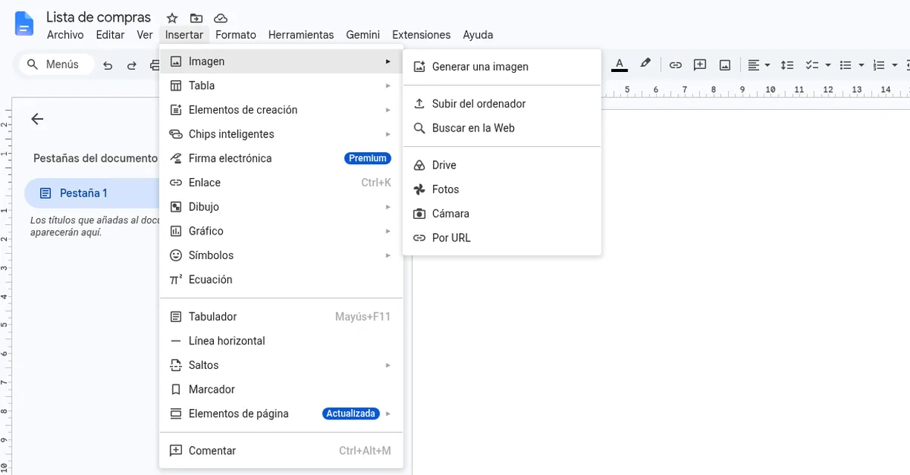
Paso 2: Generar una imagen (con Gemini)
Generar una imagen usa Gemini: escribís una instrucción que describa la imagen que querés, hacés clic en Crear, Gemini te propone varias y hacés clic en la que te guste para insertarla. Para mejores resultados, la ayuda recomienda incluir el sujeto, el entorno, la distancia, los materiales o el fondo, y evitar el lenguaje figurado. Esta función requiere un plan apto de Google Workspace o de Google AI.
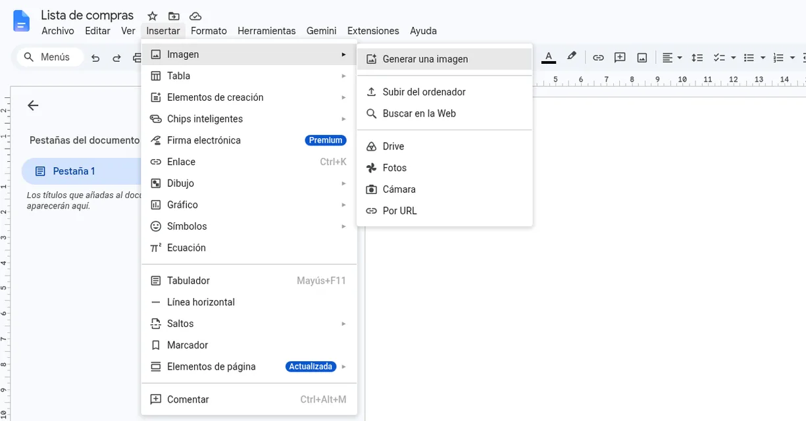
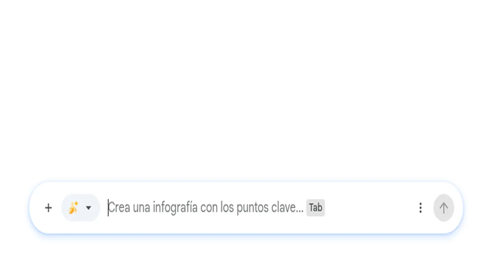
Paso 3: Subir del ordenador
Subir del ordenador inserta una imagen que tengas guardada en tu dispositivo: elegís el archivo y listo.
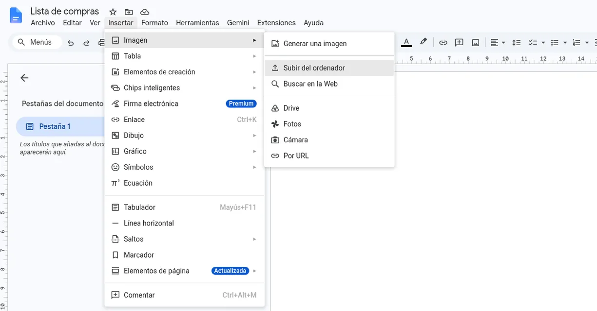
Paso 4: Buscar en la Web
Buscar en la Web abre a la derecha el panel Google Imágenes. Antes de buscar, el panel avisa: «Selecciona solo las imágenes para las que hayas confirmado que tienes licencia de uso.»
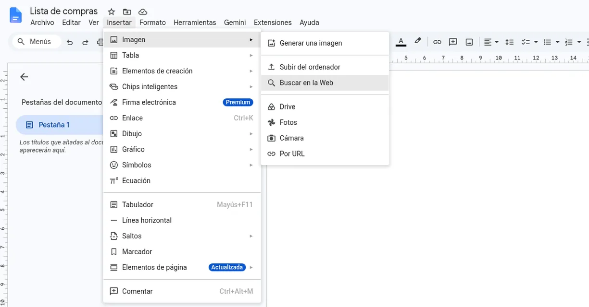
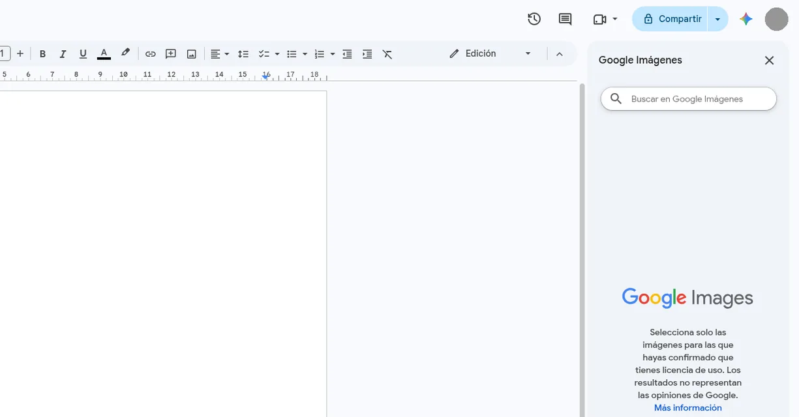
Escribí lo que buscás (en el ejemplo, «peras») y apretá Intro. Tocá una imagen para elegirla: abajo aparece «1 seleccionado» y el botón Insertar.
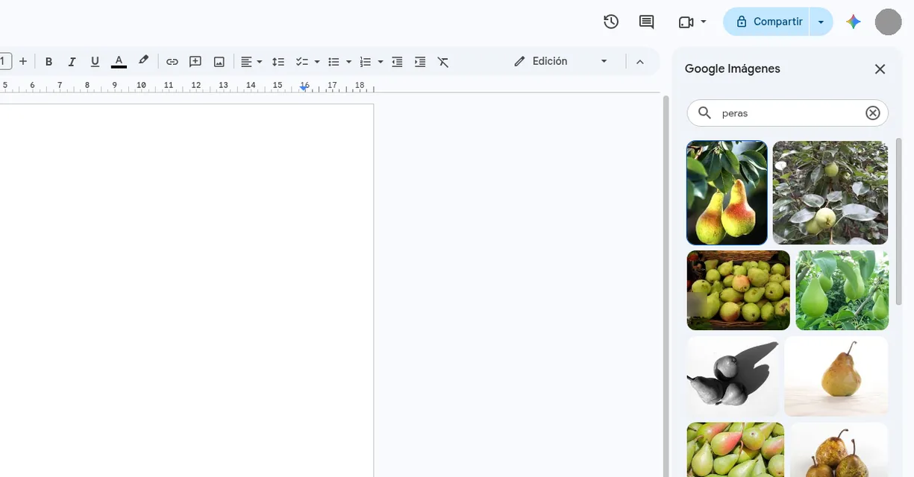
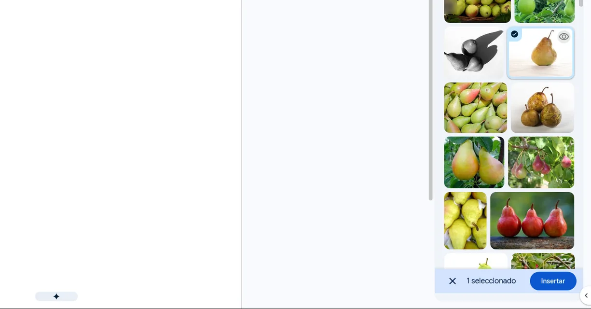
Paso 5: Drive, Fotos y Cámara
Drive abre el panel Google Drive para usar una imagen de tu unidad (con los filtros Reciente y Tipo de archivo). Fotos trae una imagen de tu biblioteca de Google Fotos y Cámara usa la cámara de tu dispositivo para agregar una imagen.
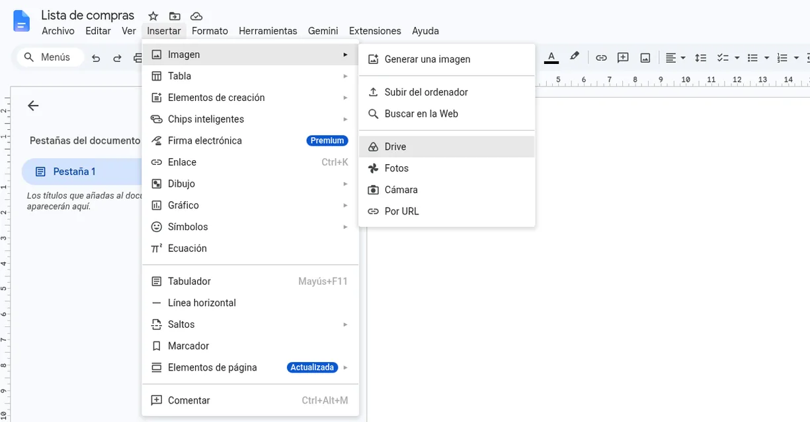
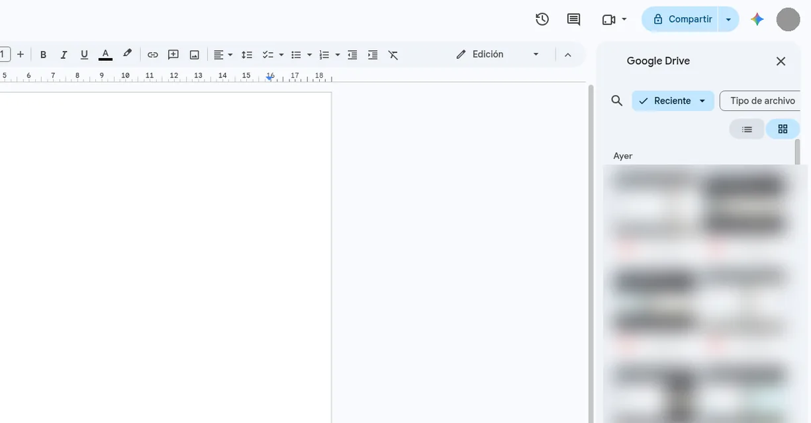
Paso 6: Por URL
Por URL abre el cuadro Insertar imagen: pegás el enlace de la imagen en «Pega la URL de la imagen...» y tocás INSERTAR IMAGEN. El cuadro repite el aviso: «Selecciona solo imágenes para las que tengas licencia de uso.»
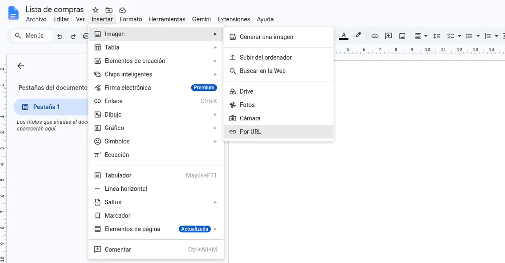
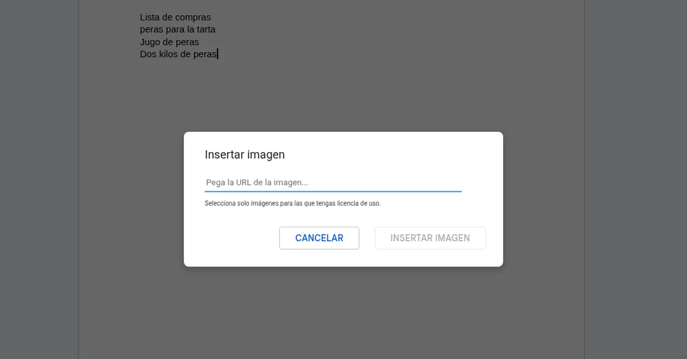
Tip: cuando ya tengas la imagen en el documento, hacé clic en ella para elegir cómo se acomoda con el texto: Intercalar, Ajustar texto, Separar texto, Detrás del texto o Delante del texto (en documentos con formato de páginas). Fuentes oficiales: Cómo insertar o borrar imágenes y videos y Aprende a generar una imagen con Gemini en Documentos de Google. Mirá también el menú Insertar completo (video: Google Docs: menú Insertar paso a paso).
Mirá el Short
Estreno del Short: 30/11/2026 · 09:00 (hora Argentina)
Video relacionado: Google Docs: menú Insertar paso a paso (tutorial completo) — el video largo del menú Insertar (verlo en YouTube).
Fuente oficial: Ayuda de Editores de Documentos de Google. Capturas propias en un documento de ejemplo («Lista de compras»). El video usa voz generada con IA.